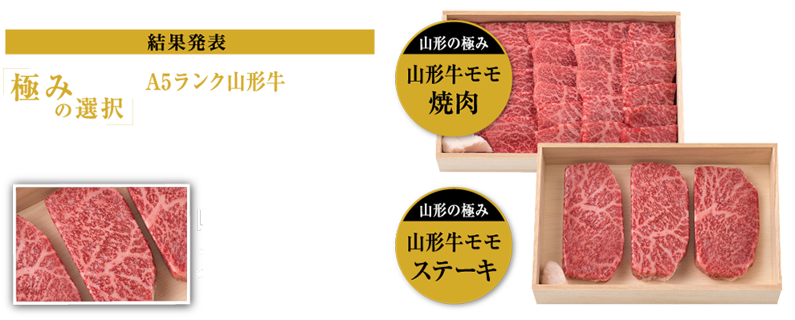
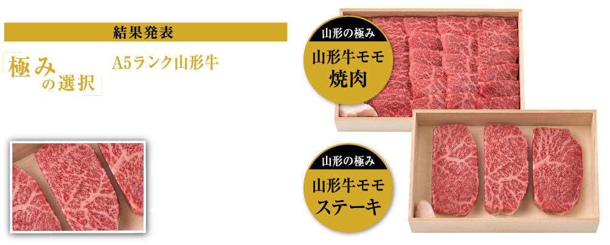

「極みの選択」A5ランク山形牛対決は
「山形牛モモステーキ」に軍配が上がりました！
- 山形牛モモ ステーキ
- 53%
- 山形牛モモ 焼肉
- 47%
今回もたくさんのご応募、ありがとうございました
プレゼント当選者の方には、
メールにてご連絡させていただきます
【結果発表】
2021年3月24日以降
- ■投票の結果発表はリンベルのホームページ上で行います
- ■当選者にはメールでご連絡させていただきます
- ■当選されなかった方へのご連絡はいたしませんのでご了承ください
応募規約
本キャンペーンにご応募の際は以下の規約をお読みいただき、同意の上、ご応募ください。
■キャンペーン期間
・2021年3月4日〜2021年3月24日
■プレゼントについて
・応募時にご投票いただいた商品をプレゼントいたします
■ご応募にあたって
・本キャンペーンに対する応募があったと認められる方の中から、抽選でプレゼントを提供いたします。
・当選された方には応募時にご登録いただいたメールアドレスにご連絡させていただきます。当選されなかった方へのご連絡はいたしませんのでご了承ください。
・当選された方はメールを受信後、記載された内容に従い、返信期限内にご連絡くださいますようお願いいたします。期限内にご連絡いただけない場合、当選の権利を無効とさせていただきます。
・当選時にご入力いただきました住所が不明、または連絡不能などの理由によりプレゼントがお届けできない場合は、当選権利を無効とさせていただきます。
・当選の権利はご本人のもので、第三者に譲渡・換金はできません。
・プレゼントの発送先は日本国内に限らせていただきます。
■個人情報の取扱について
・ご入力いただきました応募者の個人情報（住所・氏名・電話番号等）は、プレゼント発送業務及びそれに係る諸連絡の為に利用させていただきます。詳細につきましては「プライバシーポリシー」をご参照ください。